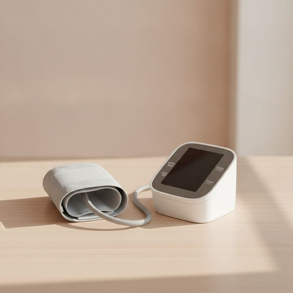
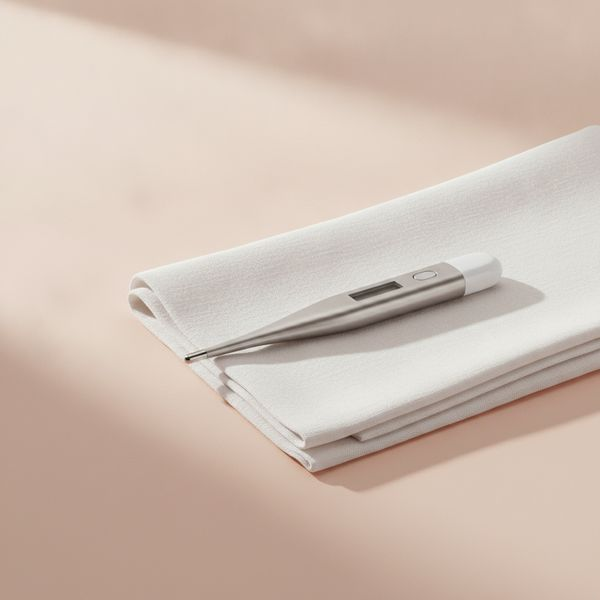
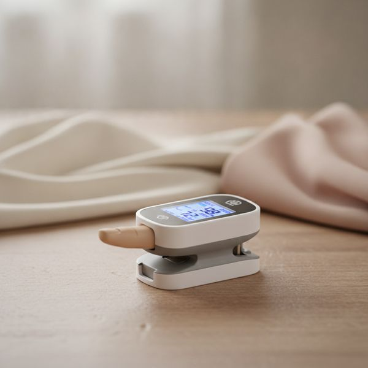
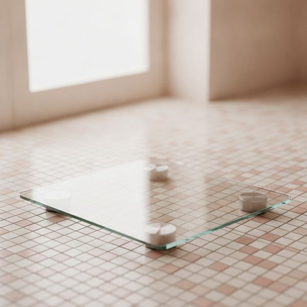
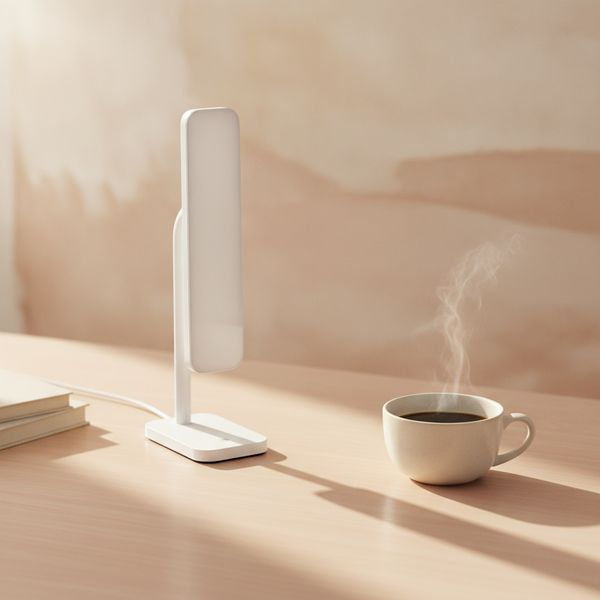
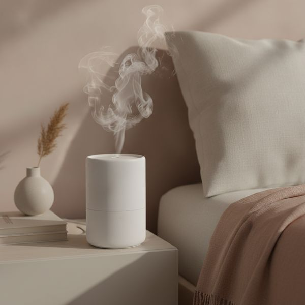
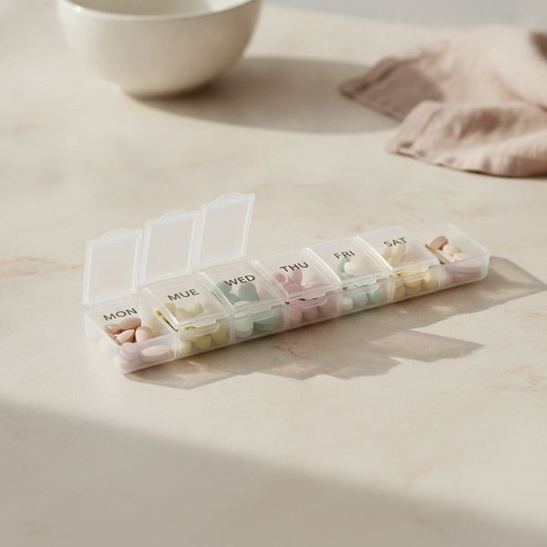
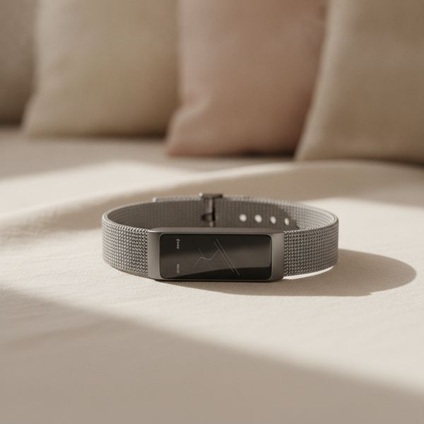
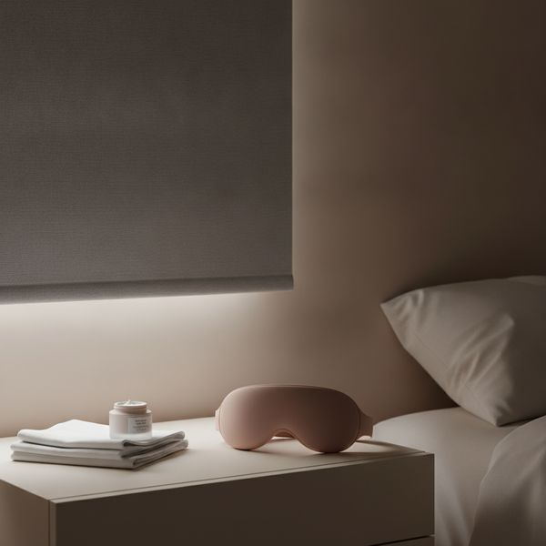
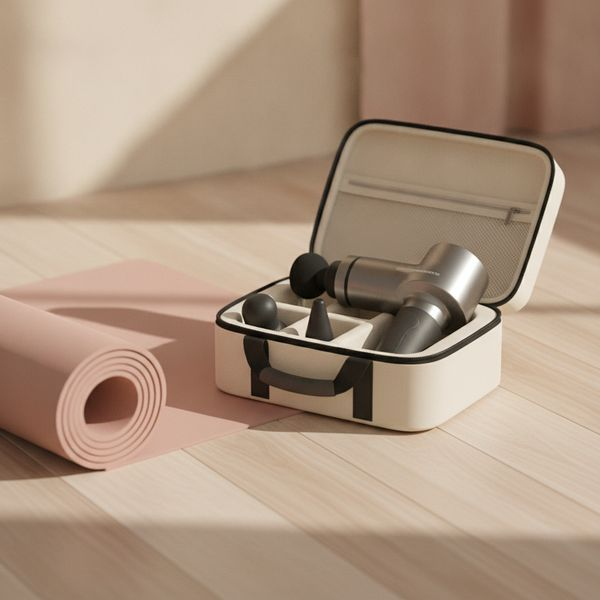

מבט ספקני על מכשירי בריאות ביתיים — אילו מהם מייצרים מספרים שאפשר לפעול לפיהם, ואילו מייצרים מספרים שרק נראים מדויקים.
מכשירי בריאות ביתיים נמצאים במקום לא נוח. חלקם מכשירים קליניים אמיתיים שבמקרה נגישים היום מבחינת מחיר, והם יכולים לשנות איך מנהלים מצב רפואי אמיתי. אחרים מייצרים מספר שנראה בטוח בלי דיוק מבוסס מאחוריו, ומספר שגוי שנראה בטוח גרוע יותר מאף מספר.
לכן הסדר כאן הוא לפי כמה אפשר לסמוך על הקריאה ולפעול לפיה. בראש הרשימה ציוד מפוקח עם אימות שפורסם. בתחתית מעקב אורח חיים — מעניין, מעודד, ולא מדידה שכדאי לקבל לפיה החלטות.
זה חשוב מספיק כדי לומר במפורש: שום דבר בעמוד הזה לא מאבחן, מטפל או מונע דבר, ואף אחד מהם אינו ייעוץ רפואי. אלה מכשירי צריכה. אם קריאה מדאיגה אתכם, או אם יש לכם תסמינים, זו שיחה עם רופא — לא סיבה לקנות עוד גאדג'ט. לעולם אל תשנו תרופות מרשם על סמך מדידה ביתית.
המחירים הם הערכה נכון לזמן הכתיבה.
גילוי נאות. הקישורים בעמוד הזה הם קישורי שותפים. אם תקנו דרכם אנחנו עשויים להרוויח עמלה, בלי תוספת עלות לכם. זה לא משפיע על מה שנכנס לרשימה או על הסדר שלו.
איך בחרנו
אנחנו מדרגים לפי כמה המדידה מאומתת: מכשירים מפוקחים עם אימות קליני שפורסם קודם, חיישני אורח חיים צרכניים אחרונים. אנחנו נשענים על מחקרי אימות שפורסמו, על מעמד אישור רגולטורי ועל דיווחים של בעלים לאורך זמן, ולא בדקנו בעצמנו את המכשירים האלה. שום דבר כאן אינו ייעוץ רפואי ואף אחד מהמוצרים אינו מאבחן או מטפל באף מצב.
השוואה מהירה
| # | מוצר | הכי מתאים ל | מחיר משוער |
|---|
| 1 | מד לחץ דם לזרוע עם אימות קליני | זה עם הגיבוי הקליני האמיתי | $45–110 |
| 2 | מדחום דיגיטלי | משעמם, חיוני, זול | $12–45 |
| 3 | מד רוויון חמצן | שימושי, עם מגבלה ידועה | $25–60 |
| 4 | משקל חכם, לשימוש במגמה בלבד | תסמכו על הקו, לא על המספר | $35–90 |
| 5 | מנורת אור יום, אם החורף שלכם חשוך | בדקו את נתון הלוקס | $60–160 |
| 6 | מכשיר אדים, אם האוויר באמת יבש | קנו קודם מד לחות | $50–130 |
| 7 | מארגן תרופות שבועי | הכי פחות זוהר, הכי יעיל | $10–30 |
| 8 | צמיד כושר, למגמות ולא לאבחון | מעודד, לא רפואי | $70–200 |
| 9 | וילון האפלה או מסכת שינה טובה | מנצח את רוב גאדג'טי השינה | $20–120 |
| 10 | אקדח עיסוי | מרגיש טוב, ההבטחות עוקפות את הראיות | $80–250 |
המחירים הם הערכה נכון לזמן הכתיבה ומשתנים לעיתים קרובות.
הבחירות

1
זה עם הגיבוי הקליני האמיתימד לחץ דם לזרוע עם אימות קליני
$45–110
זה המכשיר השימושי ביותר בעמוד בפער גדול, כי קריאות לחץ דם ביתיות באמת משמשות רופאים ולעיתים קרובות משקפות את המצב הרגיל שלכם טוב יותר ממדידה בודדת במרפאה. שני דברים ספציפיים חשובים. קנו לזרוע ולא לפרק כף היד — מדי פרק כף יד רגישים הרבה יותר למיקום ולא מומלצים לשימוש שגרתי. ובדקו שהדגם הספציפי מופיע ברשימת אימות מוכרת, כי הרבה מאוד מדים שנמכרים מעולם לא אומתו באופן עצמאי. מדדו את השרוול מול הזרוע שלכם; מידת שרוול לא נכונה מטה קריאות משמעותית.
בעד
- Readings clinicians genuinely use
- Validation lists let you check a specific model
- Cheap for a regulated instrument
נגד
- Wrong cuff size skews the numbers badly
- Wrist models are not recommended for routine use

2
משעמם, חיוני, זולמדחום דיגיטלי
$12–45
בכל בית צריך להיות אחד, ולרוב הבתים יש אחד עם סוללה ריקה. ההחלטה העיקרית היא הסוג. מדחום דיגיטלי פשוט לפה או לבית השחי הוא הזול ביותר והעקבי ביותר מבחינת דיוק, ולוקח לו קצת יותר זמן. מדחומי אינפרה-אדום למצח ולאוזן מהירים בהרבה ורגישים הרבה יותר לטכניקה, למרחק ולשאלה אם האדם בדיוק נכנס מהקור — וזה בדיוק כשמשתמשים בהם. אם אתם קונים אינפרה-אדום בשביל מהירות עם ילדים, קחו שתי מדידות והתייחסו לתוצאה מפתיעה כסיבה לבדוק עם המדחום הרגיל ולא כמסקנה.
בעד
- Cheap and genuinely necessary
- Contact digital sticks are the most consistent
- Infrared is fast for a sleeping child
נגד
- Infrared accuracy depends heavily on technique
- The one you own probably needs a battery

3
שימושי, עם מגבלה ידועהמד רוויון חמצן
$25–60
מד רוויון לקצה האצבע מעריך את רוויון החמצן בדם והוא מכשיר ביתי שימושי באמת, במיוחד לאנשים שמנהלים מצב נשימתי ידוע בהנחיה רפואית. מגבלה אחת מתועדת היטב ושווה לדעת אותה לפני שסומכים עליו: נמצא שהמכשירים האלה מעריכים ביתר את הרוויון אצל אנשים עם עור כהה יותר, כלומר קריאה יכולה להיראות מרגיעה כשהיא לא. גם ידיים קרות, לק וזוזים מטים קריאות. תתייחסו אליו כקלט אחד מכמה — איך שמישהו נראה וכמה הוא מתנשם חשובים יותר מהמספר, ותסמינים תמיד מצדיקים פנייה בלי קשר למה שהוא מראה.
בעד
- Genuinely useful under medical guidance
- Cheap and immediate
- Also gives a pulse reading
נגד
- Documented overestimation on darker skin tones
- Cold hands, polish and movement skew readings

4
תסמכו על הקו, לא על המספרמשקל חכם, לשימוש במגמה בלבד
$35–90
המשקל משתנה בכמה קילוגרמים לאורך יום ממים, אוכל ומלח, אז מדידה בודדת אומרת מעט מאוד ומדידה יומית יכולה להיות ממש מדכאת בלי סיבה טובה. מה שמשקל מחובר עושה טוב זה לשרטט את המגמה, והמגמה לאורך שבועות היא החלק היחיד שאומר משהו. אחוז שומן הגוף שהם מדווחים נגזר מזרם חשמלי קטן והוא לא מדויק במונחים מוחלטים — הוא יכול להיות שימושי באופן רופף ככיוון תנועה, ולא צריך להתייחס אליו כמדידה. אם מעקב משקל לא מועיל ליחסים שלכם עם אוכל, לוותר על זה לגמרי זו בחירה סבירה.
בעד
- The multi-week trend is the useful output
- Automatic logging removes the manual step
- Cheap
נגד
- Body fat percentage is not an accurate measurement
- Daily weighing is demoralising and uninformative

5
בדקו את נתון הלוקסמנורת אור יום, אם החורף שלכם חשוך
$60–160
אור בהיר בבוקר הוא אחת הגישות הלא-תרופתיות המבוססות יותר למצב רוח ירוד עונתי באקלים חשוך, והוא גם עוזר להזיז שעון ביולוגי שנדחף מאוחר. המפרט שחשוב הוא 10,000 לוקס במרחק שבו באמת תשבו — הרבה מנורות מצטטות את הנתון הזה במרחק שאף אחד לא משתמש בו, אז בדקו את מרחק העבודה המצוין ולא את המספר בכותרת. השתמשו בה בבוקר עשרים עד שלושים דקות; שימוש בערב יכול לדחוף את השינה מאוחר יותר. דברו קודם עם רופא אם יש לכם הפרעה דו-קוטבית, מצב עיניים, או שאתם נוטלים תרופות שמגבירות רגישות לאור.
בעד
- One of the better-supported non-drug options
- Also useful for shifting a late body clock
- No consumables
נגד
- Lux figures are quoted at unrealistic distances
- Evening use can delay sleep; check with a doctor first

6
קנו קודם מד לחותמכשיר אדים, אם האוויר באמת יבש
$50–130
אוויר יבש בבית באמת תורם לגרון מגרד, לעור יבש ולשינה מופרעת, במיוחד כשההסקה עובדת כל החורף. אבל לרוב האנשים אין מושג מה הלחות שלהם בפועל, והפעלת מכשיר אדים בחדר שכבר לח גורמת לעובש במקום לפתור משהו. תוציאו כמה שקלים על מד לחות קודם ותראו אם אתם מתחת לארבעים אחוז בערך. אם אתם כן קונים, ניקוי הוא לא אופציונלי — מיכל שלא מנוקה מרסס חיידקים לחדר שאתם ישנים בו, וזו תוצאה גרועה יותר מאוויר יבש. בחרו דגם שאפשר באמת להכניס אליו יד.
בעד
- Real benefit in genuinely dry heated air
- A cheap hygrometer tells you if you need one
- Helps sleep and skin in winter
נגד
- An uncleaned tank spreads bacteria into the room
- Useless or harmful if the room is already damp

7
הכי פחות זוהר, הכי יעילמארגן תרופות שבועי
$10–30
שום דבר אחר בעמוד הזה לא מתקרב לזה מבחינת ערך מעשי לכל שקל. אי-נטילת תרופות כמו שנרשם היא בעיה עצומה ורגילה לגמרי, ורובה אינה החלטה — היא פשוט שכחה, או באמת לא לזכור אם לקחתם את מנת הבוקר. קופסה עם תאים גלויים עונה על השאלה הזאת במבט אחד. קחו כזו עם תאי בוקר וערב נפרדים אם אתם לוקחים מנות בזמנים שונים. מלאו אותה באותו יום כל שבוע, ושמרו אותה במקום שקשור להרגל קיים כמו הקומקום ולא בארון.
בעד
- Enormous practical value for the price
- Answers 'did I take it?' at a glance
- Nothing to charge or maintain
נגד
- Only works if refilled on a fixed day
- Not suitable for medicines needing original packaging

8
מעודד, לא רפואיצמיד כושר, למגמות ולא לאבחון
$70–200
צמידים טובים בשני דברים: לספור צעדים, שזה מדד סביר לתנועה יומית, ולגרום לכם להיות קצת יותר מודעים לכמה אתם זזים. המודעות הזאת היא המנגנון האמיתי, והיא שווה משהו. תהיו ספקנים לגבי השאר. חלוקת שלבי שינה ממכשיר על פרק היד לא תואמת את מה שמעבדת שינה מודדת, הערכות שריפת קלוריות נושאות טעויות גדולות, וציוני לחץ נגזרים ברובם משונות קצב הלב עם תווית בטוחה מוצמדת. השתמשו בו כדי לשים לב למגמות לאורך שבועות. אם הוא גורם לכם לחרדה לגבי השינה — אפקט מוכר היטב — תורידו אותו בלילה.
בעד
- Step counts are a fair proxy for daily movement
- Awareness itself changes behaviour
- Long battery life on most models
נגד
- Sleep staging and calorie burn are not accurate
- Can create genuine anxiety about sleep

9
מנצח את רוב גאדג'טי השינהוילון האפלה או מסכת שינה טובה
$20–120
מכל מה שנמכר לשיפור שינה, לחושך יש מהראיות החזקות ביותר והמחיר הנמוך ביותר. אור מדכא מלטונין, ואור שדולף סביב וילון דק בחמש בבוקר בקיץ הוא סיבה נפוצה ולגמרי ניתנת לתיקון להתעוררות מוקדמת. וילון האפלה שמותקן בתוך גומחת החלון הוא הפתרון הנכון; מסכת שינה מעוצבת שלא לוחצת על העיניים עולה שבריר מזה וגם נוסעת. כל אחת מהן תעשה לרוב האנשים יותר מצמיד שינה, מאפליקציה או מתוסף — וזה שווה אמירה, כי אלה מה שמשווקים וזה לא.
בעד
- Strong evidence, very low cost
- Fixes early summer waking directly
- A mask travels and costs almost nothing
נגד
- Blinds need measuring and fitting
- Flat masks press on the eyes — get a contoured one

10
מרגיש טוב, ההבטחות עוקפות את הראיותאקדח עיסוי
$80–250
הם באמת מרגישים טוב ויכולים להגדיל זמנית טווח תנועה ולהפחית את תחושת הכאב בשרירים, וזו תועלת אמיתית גם אם צנועה. מה שהראיות לא תומכות בו הוא הסיפור השיווקי הגדול יותר על שטיפת חומצת חלב, האצת התאוששות או פירוק הידבקויות. תשפטו אותו ככלי עיסוי עצמי נעים ונוח והוא תמורה סבירה; תשפטו אותו לפי ההבטחות על הקופסה ותתאכזבו. הימנעו מעצם, ממפרקים, מהצוואר ומכל אזור פצוע, נפוח או חסר תחושה, ודברו עם רופא לפני שימוש אם אתם נוטלים מדללי דם או עם הפרעת קרישה.
בעד
- Genuinely pleasant and convenient
- Temporary range-of-motion and soreness benefit
- Reaches areas a foam roller cannot
נגד
- Recovery and lactic acid claims are unsupported
- Not for bone, joints, neck or injured areas
שאלות נפוצות
האם פיצ'רי הבריאות בשעונים חכמים מדויקים?
דופק במנוחה בדרך כלל טוב, ולפיצ'רי אק"ג במכשירים מאושרים יש אימות אמיתי. חלוקת שלבי שינה, שריפת קלוריות וציוני לחץ הם הערכות עם טווחי טעות גדולים — שימושיים כמגמות, לא כמדידות.
איזה מכשיר בודד הכי שווה להחזיק?
מד לחץ דם לזרוע עם אימות קליני, אם זה רלוונטי לכם. זה המכשיר היחיד כאן שרופא באמת ישתמש בקריאות שלו, וללחץ דם גבוה אין תסמינים עד שהוא משנה מאוד.
המכשיר נתן לי קריאה מדאיגה. מה לעשות?
מדדו שוב, נכון, אחרי חמש דקות של ישיבה בשקט — טעויות טכניקה נפוצות. אם זה נשאר חריג, או אם יש לכם תסמינים, פנו לרופא. אל תשנו שום תרופת מרשם על סמך מדידה ביתית.
מהו גאדג'ט הבריאות הכי מוערך יתר על המידה?
כל דבר שמבטיח ניקוי רעלים, ומכשירים לבישים לתיקון יציבה. וגם רוב טבעות וצמידי מעקב השינה לאנשים שכבר ישנים בסדר — אצל חלק מהמשתמשים המעקב עצמו הופך למקור חרדה לגבי השינה.
← כל המדריכים
כשותפים של אמזון ושל עליאקספרס אנחנו מרוויחים עמלה מרכישות מזכות. המחירים והזמינות נכונים לזמן הפרסום ועשויים להשתנות.